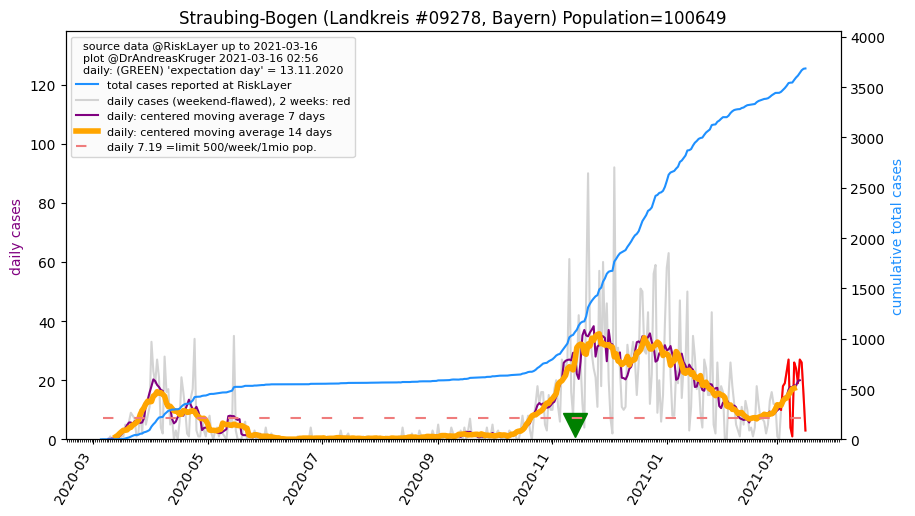
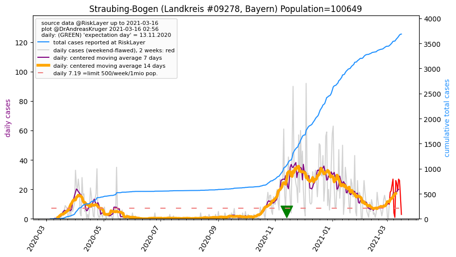

")
")
")
")
")
")
")
")
| Straubing-Bogen_LK (0.0 km)  |
Straubing_KS (2.2 km) |
Dingolfing-Landau_LK (28.8 km) |
| Deggendorf_LK (33.5 km) |
Regensburg_LK (36.4 km) |
Regensburg_KS (36.6 km) |
| Cham_LK (38.4 km) |
Regen_LK (40.3 km) |
Landshut_LK (47.5 km) |
All plots are regenerated with new data every night. Beware this temporary hotspot is an experimental page - it might get removed, so please do not link to it. Instead link to project http://tiny.cc/cov19de.